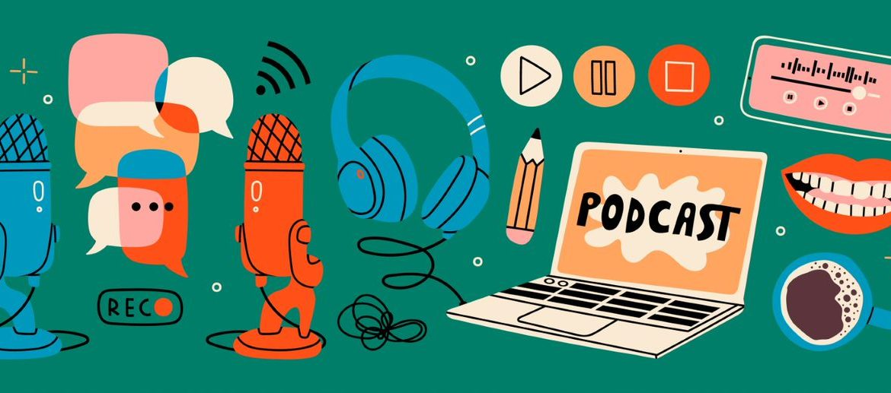

Cometario de infografías y clase expositiva contamientación ambiental y divulgación científica
- Duración:
- 00:55
- Agrupamiento:
- Grupo clase
Continuamos la clase expositiva para ver los principales problemas ambientales y la misión de los grandes divulgadores actuales, para lo que se presenta la actividad: creando un podcast de divulgación.

El alumnado deberá buscar información de forma autónoma sobre una figura de divulgación científica o ecología para posteriormente grabarla en la plataforma online vocaroo a modo de entrevista o programa radiofónico.